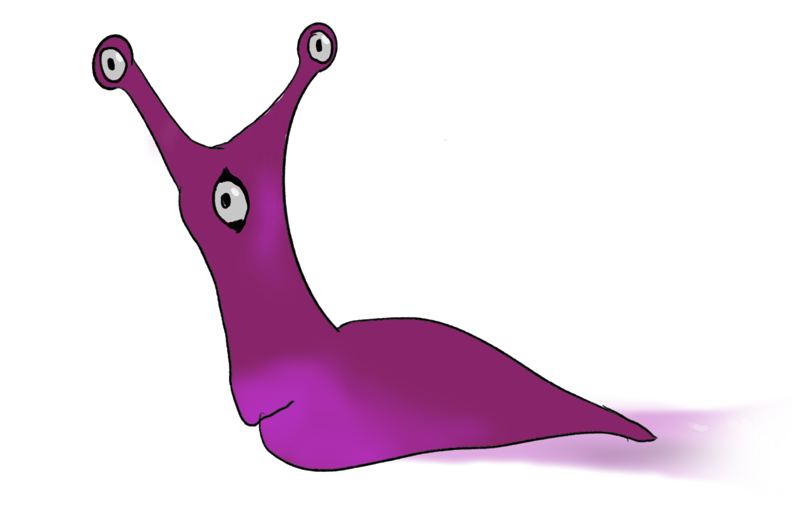
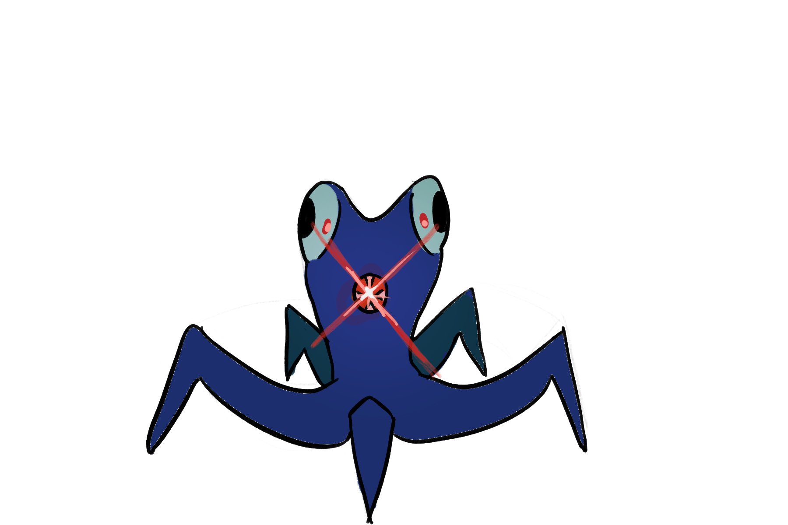
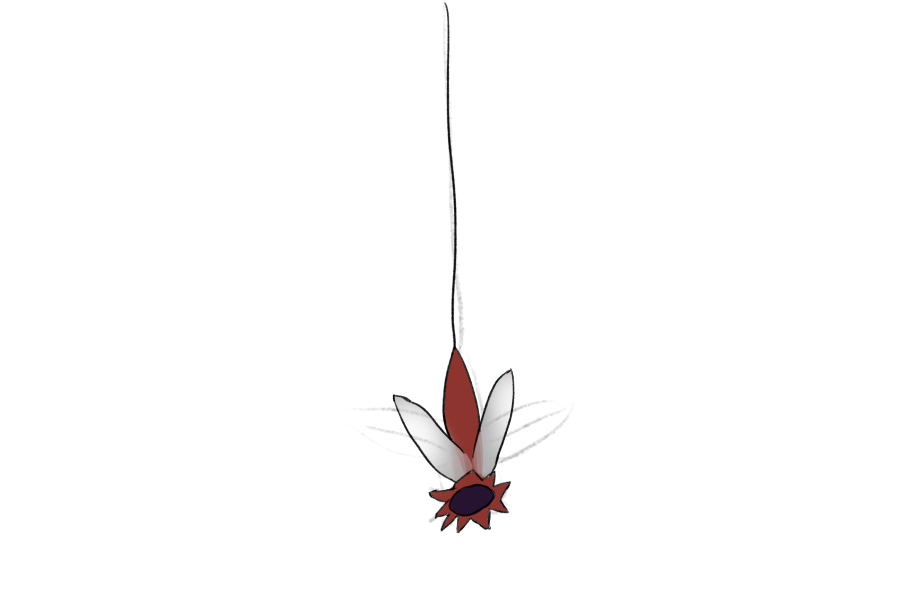
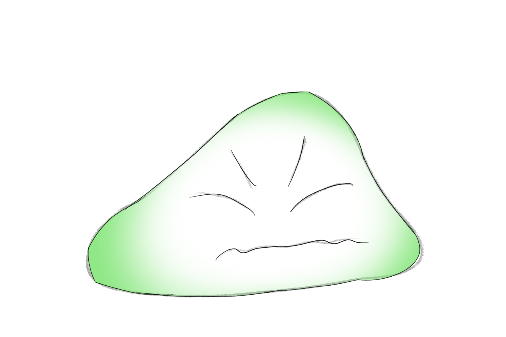

Alien languages
Ever wondered what an alien language could look like? Scientists have discovered 13 interesting communication systems that look like languages, but they aren't quite sure, because they all violate at least one of Hockett's design features!
Charles Hockett was a linguist who proposed 13 features that allow us to separate human from animal communication.
Keralogian - Vocal-auditory channel

Actinolumen - Broadcast transmission & directional reception

Hyphotonian - Rapid fading

Avia - Interchangeability

Luman - Complete feedback

Psychan - Specialization

Pragmanese - Semanticity

Iconoglossia - Arbitrariness

Aschismean - Discreteness

Achronese - Displacement
Termine - Productivity

Genolang - Traditional transmission

Melodia - Duality of patterning